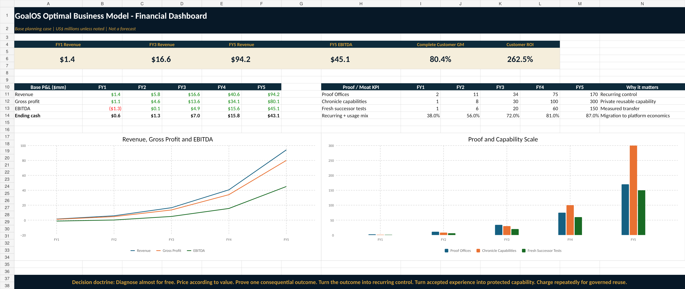

01 · Decision
Executive Brief
The six-page board pre-read: model, customer, offer ladder, economics, proof gates, 90-day decision.
A services-led, software-scaled, capability-licensed Proof Utility: diagnose almost for free, price by value, prove one consequential outcome, convert the outcome into recurring control, and charge repeatedly for governed reuse of private validated capability.
The first customer finances capability creation. Recurring Proof Offices monetize continuing control. Protected invocation turns accepted private capability into high-margin usage revenue. Every claim, price, and forecast remains governed by evidence.

Begin with the decision, then inspect the economics, operating doctrine, and launch plan. Every major document is available in a presentation-ready format and an editable source format.
The six-page board pre-read: model, customer, offer ladder, economics, proof gates, 90-day decision.
The definitive commercial architecture, pricing doctrine, unit economics, autonomous funnel, moat, financial model, risks, and stop conditions.
The zero-seller lane: qualification, value pricing, contract boundaries, evidence-linked claims, recurring conversion, renewal, and Commercial Chronicle.
A 22-slide narrative from Capability–Price Lag to recurring Proof Utility, protected invocation, five-year economics, and Commercial Proof Run 001.
Eleven linked sheets covering assumptions, revenue, P&L, liquidity, unit economics, customer ROI, funnel, scenarios, moat KPIs, and sources.
A single visual system covering customer, value proposition, channels, revenue, cost, key resources, moat, proof gates, and north-star economics.
The weekly operating mandate, budget, responsibilities, dashboard, GO / CONDITIONAL GO / STOP tests, and board questions.
Evidence boundaries, source register, QA results, and SHA-256 integrity manifest.
The model is intentionally editable. These numbers are strategic hypotheses used for planning and falsification—not audited forecasts, guaranteed outcomes, or a valuation opinion.
| Measure | FY1 | FY3 | FY5 |
|---|---|---|---|
| Revenue | US$1.4M | US$16.6M | US$94.2M |
| Gross profit | US$1.1M | US$13.6M | US$80.1M |
| EBITDA | (US$1.3M) | US$4.9M | US$45.1M |
| Recurring + usage revenue mix | 38% | 72% | 87% |
| Average active Proof Offices | 2.25 | 34 | 170 |
| Rights-cleared Chronicle capabilities | 1 | 30 | 300 |
Use conservative attributable value—not total project value—and keep forecast, verified, and realized value separate.
Qualification doctrine: standard missions should normally address a conservative value pool of at least 4× the first-year fee.
{kind=link}
{kind=link}